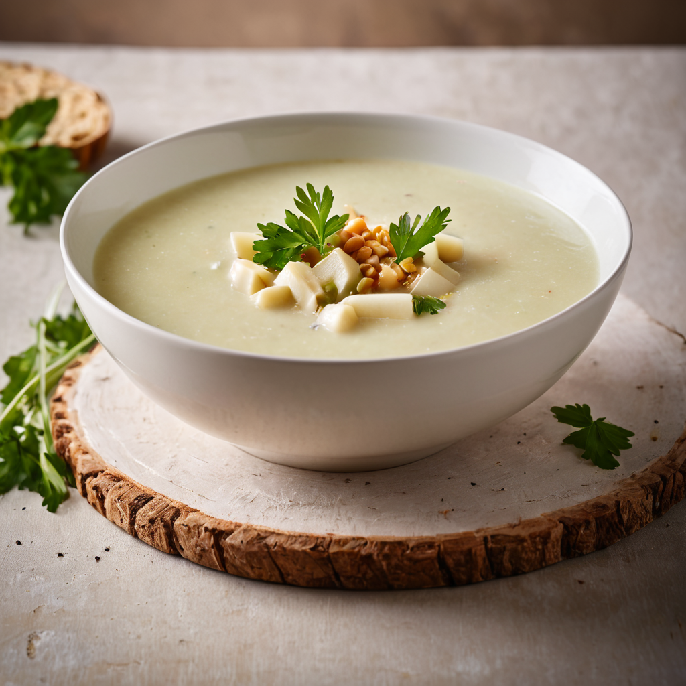

Hozzávalók:
- 2 közepes méretű karalábé, meghámozva és felkockázva
- 1 fej vöröshagyma, apróra vágva
- 2 gerezd fokhagyma, apróra vágva vagy zúzva
- 2 ek vaj vagy olívaolaj
- 4 csészezöldség alaplé vagy víz
- 1/2 csészetejszín vagy tej
- 1 ek liszt (opcionális, a krém sűrítéséhez)
- Friss petrezselyem vagy snidling apróra vágva a tálaláshoz
- só
- bors
Elkészítés:
- Egy nagy lábasban melegítsük fel a vajat vagy olívaolajat közepes lángon.
- Adjuk hozzá az apróra vágott vöröshagymát, és pirítsuk meg, amíg üveges lesz, körülbelül 5 percig.
- Keverjük hozzá az apróra vágott fokhagymát, és pirítsuk további 1-2 percig, amíg illatos lesz.
- Adjuk hozzá a felkockázott karalábét a pirított hagymához, és főzzük néhány percig.
- Öntsük fel az alaplével vagy vízzel, és főzzük a karalábét, amíg megpuhul, kb. 15-20 percig.
- Amikor a karalábé megpuhult, vegyük le a tűzről, és turmixoljuk simára botmixerrel vagy állítsuk be a leves állagát.
- Ha szeretnénk sűríteni a levest, keverjük össze a liszttel a tejszínnel vagy tejjel, majd adjuk hozzá a leveshez, és főzzük további 5-10 percig, amíg besűrűsödik.
- Ízesítsük sóval és frissen őrölt fekete borssal ízlés szerint.
- Tálaláskor szórjuk meg friss petrezselyemmel vagy snidlinggel